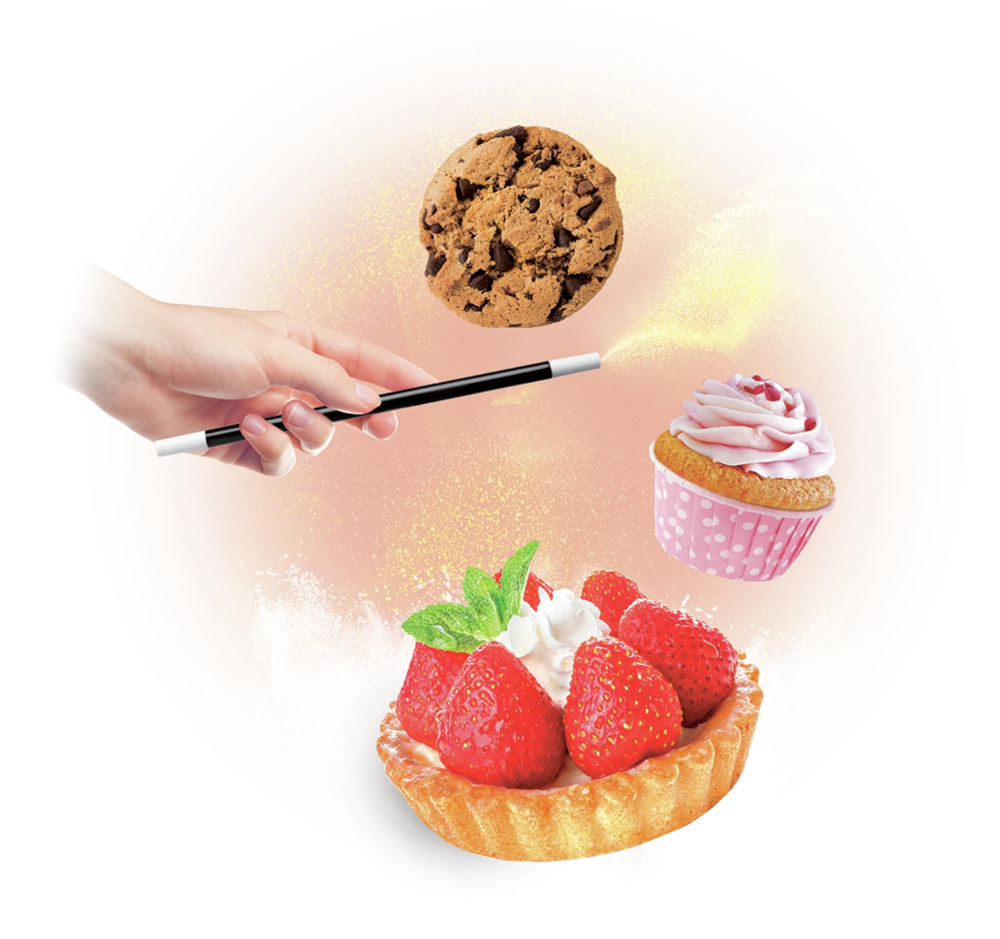
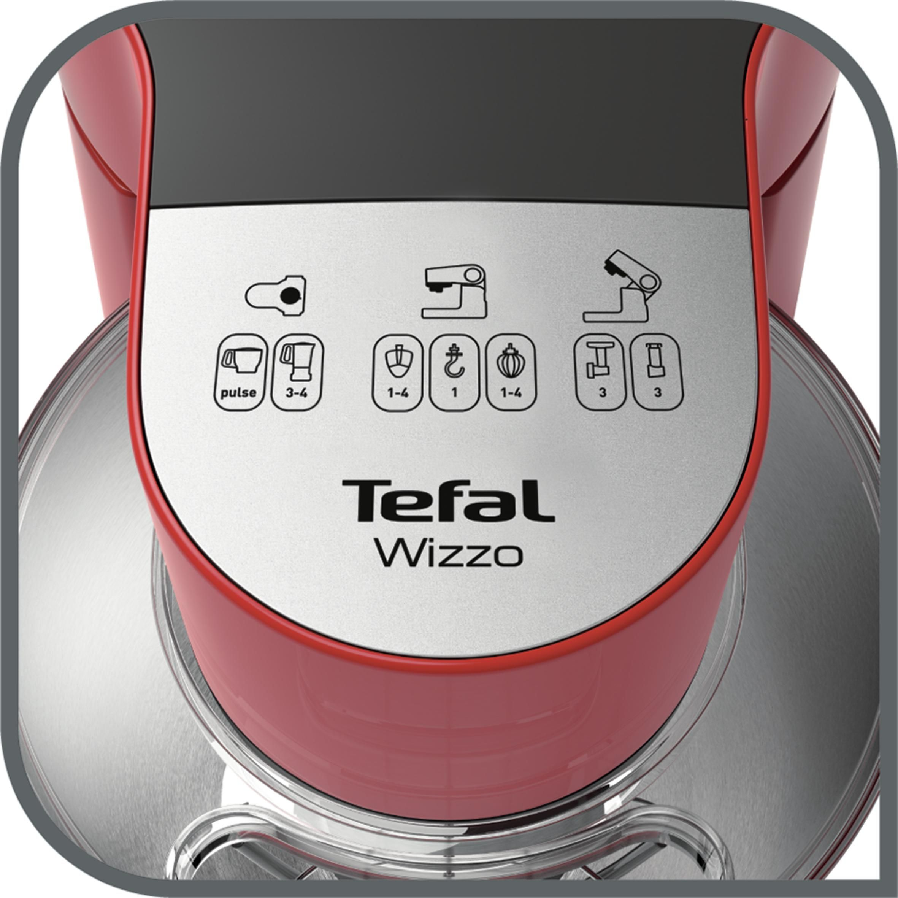

Scurta descriere
Robot de bucatarie Tefal Wizzo QB307538, 700 W, 4 l, Functie pulse, Mixer, Carlig pentru aluat, Rosu
Ajutorul tau in bucatarie
Robotul de bucatarie Wizzo iti va simplifica viata in bucatarie! Cu ajutorul setului pentru patiserie ce include telul cu tehnologie patentata Flex Whisk succesul este garantat. De acum prepararea de biscuiti, pizza, prajituri sau torturi nu va mai reprezenta un secret pentru tine! Retetele pe care ti-ai dorit mereu sa le prepari dar nu ai indraznit niciodata vor deveni floare la ureche. Datorita deschiderii frontale si a pozitionarii butoanelor, nu va mai fi nevoie sa cauti comenzile imprejurul aparatului. Datorita designului sau inteligent robotul de bucatarie Wizzo se potriveste perfect in orice bucatarie.
Nu exista limite cu robotul de bucatarie Wizzo
Adevaratul talent sta in capacitatea de a lucra in echipa. Creste-ti potentialul in bucatarie cu ajutorul robotului de bucatarie Wizzo, special proiectat
pentru a-ti simplifica viata.
Puternic si versatil, Wizzo este partenerul ideal in bucatarie pentru a prepara deserturile preferate in fiecare zi: fursecuri, mousse de ciocolata, briose...
Simplifica-ti viata cu stil!
Cu un design special conceput, telul Flex ajunge cu usurinta pana la baza bolului, astfel incat toate ingredientele sunt rapid amestecate si capata o textura
fina si pufoasa.
Rotatia planetara asigura rezultate rapide si texturi fine si omogene.
Poti prepara pana la 40 de briose sau chiar 3 aluaturi mari de pizza datorita bolului cu o capacitate de 4 L.
Framanta, amesteca si bate cu setul de ustensile de patiserie perfecte pentru utilizare zilnica: carlig de framantat pentru aluaturi grele, mixer, tel Flex.
O gama completa de accesorii de calitate pentru preparate savuroase si variate: blender, tocator/feliator, masina de tocat, accesorii pentru radere si feliere.
- Robotul de bucatarie Wizzo, bol cu o capacitate de 4 L din inox si protectie impotriva stropilor;
- Design compact, cu utilizare frontala, usor de folosit;
- Miscare planetara pentru rezultate optime de mixare;
- Tehnologie patentata Flex Whisk pentru o mixare perfecta;
- Set pentru patiserie: tel cu o tehnologie patentata Flex Wisk pentru preparate usoare, accesoriu din plastic pentru aluaturi pentru patiserie, carlig din inox pentru aluaturi dense;
- 4 trepte de viteza si functie pulse pentru un control total asupra aparatului;
- Rapid si puernic: 700 W.
Ajutorul tau in bucatarie
Adevaratul talent sta in capacitatea de a lucra in echipa. Creste-ti potentialul in bucatarie cu ajutorul robotului de bucatarie Wizzo, special proiectat pentru a-ti simplifica viata. Odata ce vei incepe sa-l folosesti nu vei renunta la el niciodata!
Tehnologia Flex Whisk
Gratie tehnologiei Flex incorporate in tel si formei speciale, cu Wizzo poti bate albusuri foarte pufoase si aerate, chiar pornind de la 1 ou.
Usor de folosit si depozitat
Posibilitate de utilizare frontala a robotului face ca Wizzo sa fie usor de manevrat si datorita designului sau inteligent produsul de potriveste perfect in orice bucatarie.
